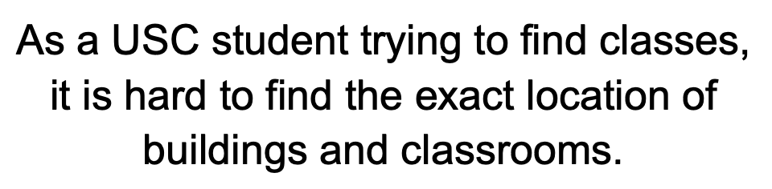
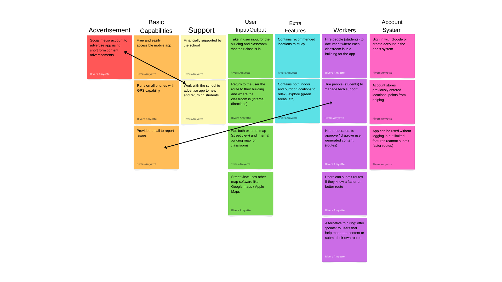
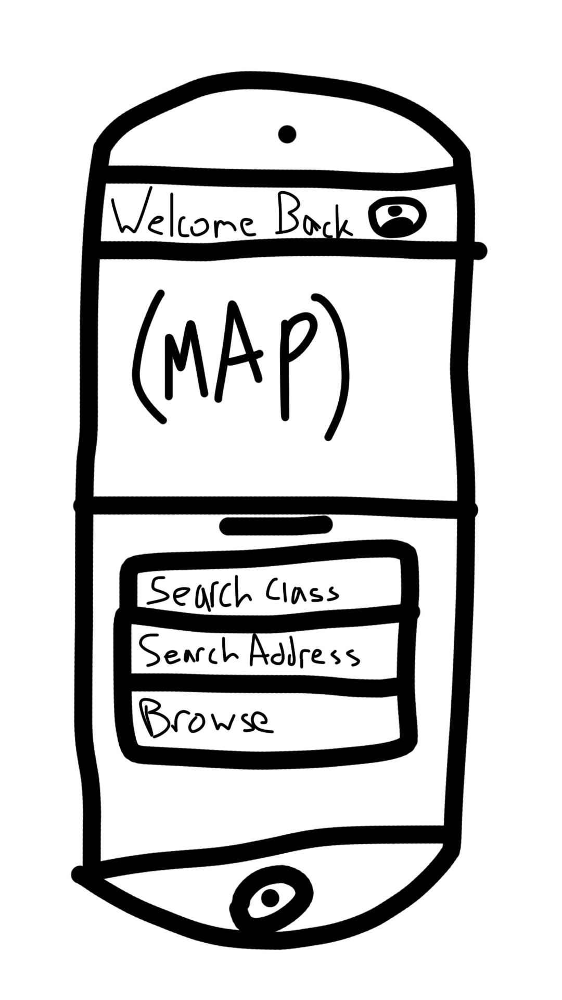

Problem Statement
As a USC student trying to find classes, it is hard to find the exact location of buildings and classrooms.
Affinity Diagram
This affinity diagram looks at lots of different areas in the project. Some of which include basic features, hiring, and other important topics that must be considered when building a new application. It helped me figure out what exactly I want to do with the project.
Sketches
These sketches show each page of the application, including the main page, search for class, address, browse, and the account page.
Prototype

My prototype shows off how the app would work from a normal student's perspective. It includes demonstration of how each feature in the app works, like searching for both classes and addresses, and browsing popular locations to visit on or around campus.
Algorithmic Design Final Project
These are a few pieces of code that I wrote while taking Algorithmic Design II!